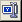
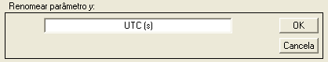

| Menu Dados |
 |
Renomear
Parâmetro y
Essa operação
permite renomear o
parâmetro selecionado em y.
Clique no menu “Dados ► Renomear parâmetro y” ou o
botão 
A Caixa de
Diálogo solicitará que o usuário indique novo
nome do parâmetro:

O nome do
parâmetro não pode ser vazio nem superior a 48
caracteres (incluindo as unidades).
O parâmetro
“No. OBS.” não pode ser renomeado.
Ao pressionar
OK, o R_DAT irá
atualizar o nome do parâmetro.
|
Nota: Caso o
parâmetro definido como tempo de referência tenha sido renomeado, o R_DAT atualizará a definição
automaticamente. |
| |
Criar novo parâmetro |
Excluir |
|